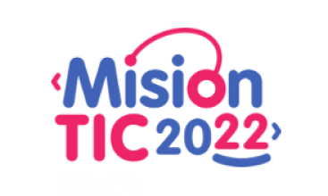

Bienvenido a nuestra biblioteca
Esta biblioteca es un simple ejercicio de clase en el cual usando SpringBoot, y tecnologías como Java, HTML, CSS, y JavaScript, se crea un
simple sitio web que consta de tres simples módulos:
-
Autores: Se guarda la información básica de autores que tienen libros en la biblioteca.
-
Editoriales: Se guarda la información básica de editoriales que tienen libros en la biblioteca.
-
Libros: Se guarda la información de los libros disponibles en la biblioteca.
Este proyecto es parte del proceso de formación en el marco del programa MisionTIC 2022, liderado por el
MinTIC del Gobierno de Colombia, y coordinado en este caso por la Universidad Sergio Arboleda.
